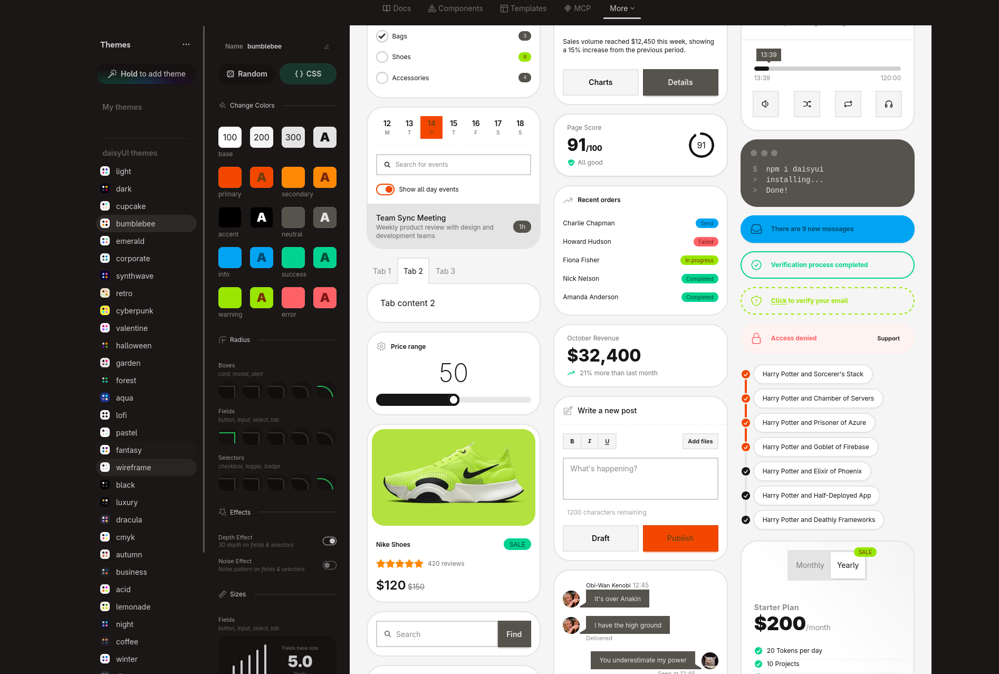

customize your Tdoc
How to customize ?
In a first time Tdoc is based on HTML,
CSS with Tailwindcss and DaisyUI for components and themes.

| Name | Utils | Link/ressources | |
|---|---|---|---|
| 1 | Html | HyperText Markup Language | Mozilla developer html |
| 2 | Tailwind | A CSS framework for writh css into html balise and simplifed css | Tailwind documentation |
| 3 | DaisyUI | daisyUI is the Tailwind CSS plugin for component | DaisyUI documentation |
How to change the themes ?
As mentioned above, Tdoc uses DaisyUI, which comes with a complete theme
system with more than 30 built-in themes. You can also create your own if you
can't find the one that suits you.
Where is the theme
You can find the themes in a html balise in above of your head
This is short pipline of the code :
selection of the most useful themes :
| Theme | Style | Best for | |
|---|---|---|---|
| 1 | Light | Light, neutral | Classic docs |
| 2 | dark | Dark, neutral | Technical docs |
| 3 | forest | Dark, green | Dev / nature (MY FAVORITE :>) |
| 4 | cupcake | Light, soft | Friendly projects |
| 5 | corporate | Light, clean | Professional / business docs |
| 5 | dracula | Dark, purple | Developers |
Test the deferante themes :
How to create your's
If none of the themes are suitable for viewing the image,
no problem, you can create your own.
1)
You need to go to DaisyUI theme generator

Once on the page, you will have the option to use an existing theme
as a base and simply click to change elements such as colors,
raduis, and sizes.
2)
Create a css files exemple themes.css
and paste this default code in :
3)
Past your CSS of the DaisyUI theme generator, like this :
If you would like to know more, feel free to refer to the official DaisyUI documentation.
4)
Ultimately, you simply need to copy the name of your theme into the HTML tag using `data-theme` and link your css file to html on past link in you head :
And you succeeded well done ! 🎉
Now you have you own theme